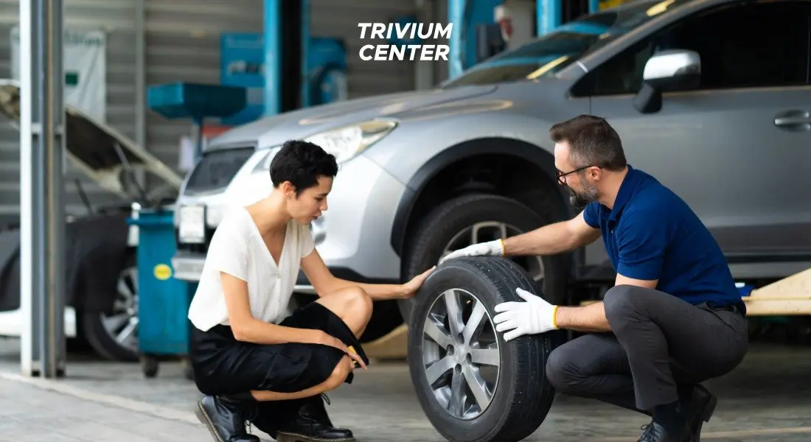

El servicio de rotación de neumáticos es una práctica esencial para prolongar la vida útil de las cubiertas y mejorar la seguridad del vehículo. Sin embargo, muchos conductores en Argentina no realizan esta tarea con la frecuencia recomendada, lo que genera un desgaste desigual y puede derivar en problemas mecánicos. Para los talleres y gomerías, ofrecer este servicio no solo es una oportunidad de negocio, sino también una manera de fidelizar clientes al brindar un mantenimiento clave para el rendimiento del auto.
¿Por qué es clave la rotación de neumáticos?
Los neumáticos no se desgastan de manera uniforme debido a factores como el tipo de tracción del vehículo, el estado de la suspensión y los hábitos de conducción. La rotación periódica de los neumáticos permite:
- Desgaste uniforme: Al intercambiar las posiciones de las ruedas, se evita que algunos neumáticos se deterioren más rápido que otros.
- Mayor vida útil de las cubiertas: Una distribución equilibrada del desgaste prolonga la durabilidad de los neumáticos, reduciendo costos de reposición.
- Mejor agarre y seguridad: Un desgaste parejo mejora la estabilidad y tracción del vehículo, reduciendo riesgos en curvas o frenadas bruscas.
- Ahorro de combustible: Neumáticos en buen estado reducen la resistencia al rodamiento, optimizando el consumo de combustible.
El rol de los elevadores bajo perfil en la rotación de neumáticos
Para realizar un servicio rápido y eficiente, contar con el equipo adecuado marca la diferencia. Los elevadores bajo perfil se han convertido en una herramienta indispensable en gomerías y talleres que buscan optimizar sus tiempos de trabajo.
Ventajas de los elevadores bajo perfil:
- Acceso fácil y versátil: Diseñados para levantar vehículos con poca distancia al suelo, ideales para autos deportivos y de perfil bajo.
- Mayor velocidad en el servicio: Permiten levantar el auto de manera rápida, facilitando el cambio y rotación de neumáticos en pocos minutos.
- Seguridad y estabilidad: Proporcionan un soporte firme y seguro para trabajar sin riesgos.
- Optimización del espacio: Su diseño compacto los hace ideales para talleres con espacio reducido.
Conclusión
Ofrecer el servicio de rotación de neumáticos es una estrategia inteligente para cualquier taller o gomería, ya que no solo mejora la experiencia del cliente, sino que también incrementa la rentabilidad del negocio. Contar con elevadores bajo perfil permite realizar este trabajo de forma rápida y segura, optimizando la atención y diferenciándose de la competencia. Si buscás mejorar tu taller con equipos de calidad, invertir en elevadores bajo perfil es una decisión acertada que potenciará tu servicio.